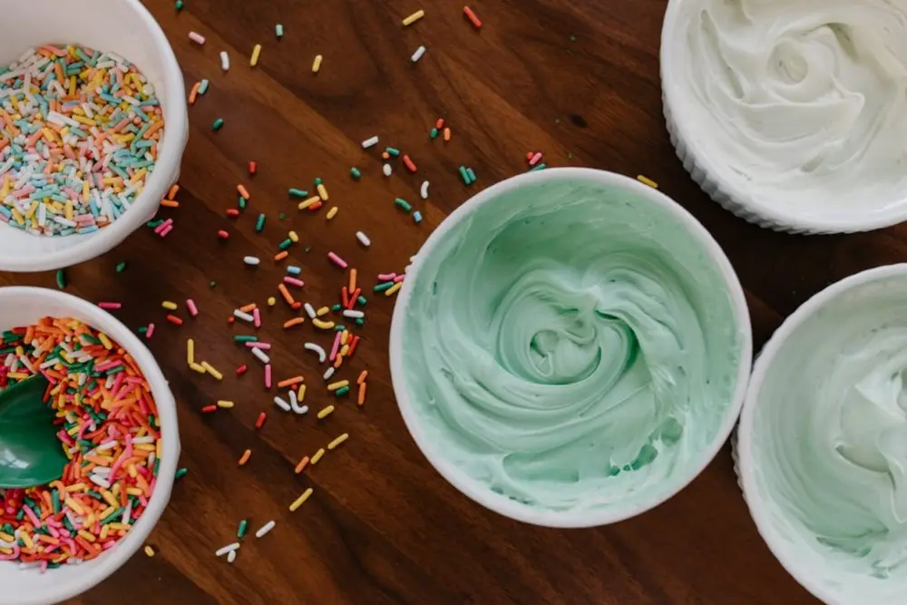

Articles / Tips & trends
Know your food additives
2024-04-08 · Tips and Trivia, Tips and Trivia

With all those food safety news featured on TV, it’s no wonder that food additives get a bad rap. Many food companies boast foods and beverages with little to no additives, with taglines such as “Ingredients lists you can pronounce.” In contrast, people worry when seeing chemical names on the back of your cereal box.
What are food additives, exactly? What kinds of additives are commonly-used, and do they deserve the reputation? Read on to learn more!

What are food additives?
Food additives refer to a range of substances added to food for different purposes. This includes giving the product its shape and form, enhancing the characteristics of the food, and/or extending its shelf life.
People in the past used to use salt, vinegar, spices and dyes to preserve and enhance their food. Nowadays, many manufacturers use additives alongside those natural methods to achieve the same results.
Types of food additives
Depending on the purposes, food additives can be divided into different categories.
Some common categories include:
Food colourings
As its name suggests, food colourings add or enhance the colours of the product.
Food colourings can come from both natural and artificial sources. For example, carmine is extracted from a type of bug!
Perservatives
Preservatives help inhibit the growth of harmful pathogens, yeasts and/or molds. Otherwise, food would go off easily and might cause food poisoning and other illnesses.
Some common preservatives include Potassium Sorbate and Sulphur Dioxide
Antioxidants
Much like other preservatives, anti-oxidants help preserve food by preventing/slowing down oxidization.
Vitamin C is in fact a common natural anti-oxidant!
Texture enhancers
Texture enhancers help maintain the shape, texture and appearance of the foods.
This includes emulsifiers, stabilizers, thickeners, foaming agents and gelling agents.
Sweeteners
As people are getting more concious about the sugar levels of their foods, sweeteners help sweeten food without adding extra sugar/calories.
They can be further divided into natural sweeteners (such as stevia) and artificial sweeteners (such as Aspartame)
Flavourings
Flavourings add or enhance the flavour of the foods, often by adding taste/aroma to the food.
These can either be natural flavourings extracted from the food itself or other sources, or synthesized artificially.

Are they dangerous?
Long story short: it depends.
Many countries and regions regulate the usage of food additives, both for what addtives are allowed for use, and for the amount allowed to add. This ensures that manufacturers use additives in a manner that is safe for human consumption.
As long as the manufacturer follow food regulations and proper food practices, usage of food additives should be pretty safe!
Eat safely!
Nevertheless, there are some things you can do to enjoy your food safely:
Before buying, check the ingredients list and make sure it doesn’t trigger your allergies
How we can help!
In our range of healthy bubble tea, we offer bubble tea powders made with natural flavourings and colourings. Safe to drink, and delicious to boot!
Check it out!